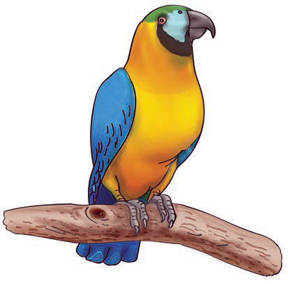
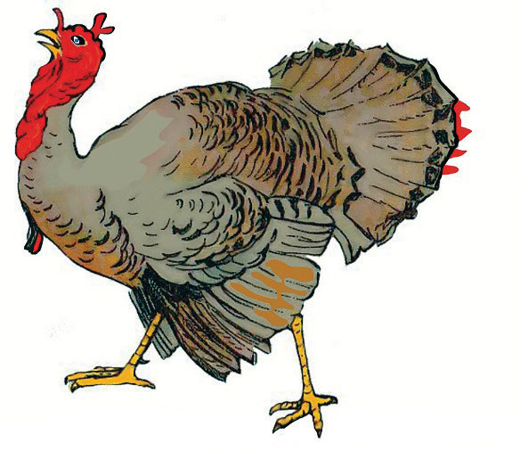

Kasuku hakuwa nyuma. Naye aliingia na kueleza kuwa yeye ni ndege mwenye rangi nyingi. Anapenda kuiga sauti za binadamu. Mara nyingi hufugwa na binadamu.

Majigambo yaliendelea Batamzinga na Mbuni walifuata. Batamzinga alisema yeye ni ndege wa porini, pia hufugwa. Alijilinganisha ukubwa wake na kuku. Batamzinga alitamba kuwa yeye ni mkubwa kuliko kuku. Pia, ana rangi nyingi na hupenda kula samaki.
